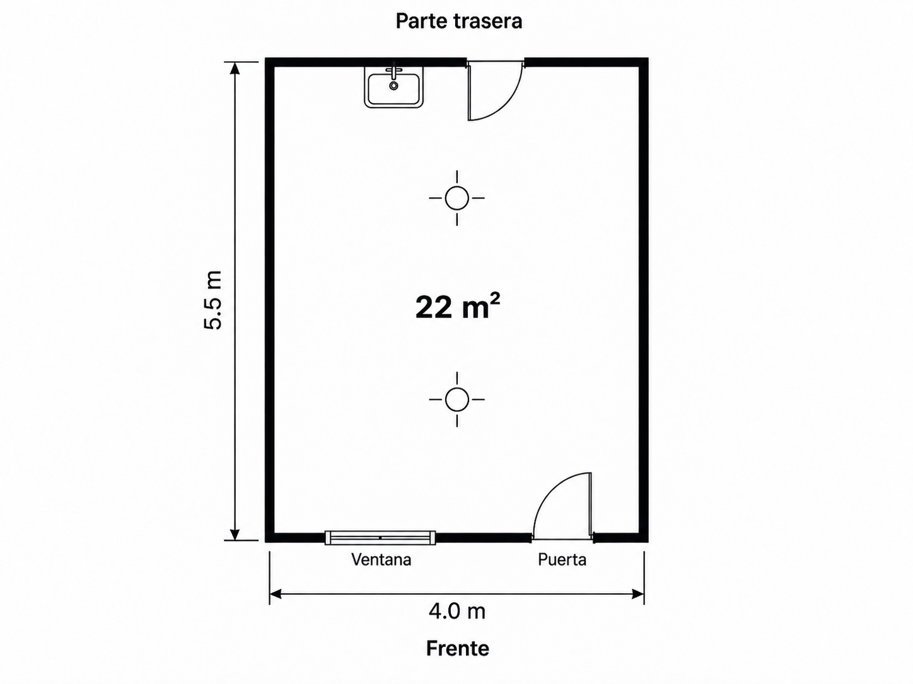

Project evidence dossier · English
Systematization of the digital plant guide developed for Impulsa CR: invite-only access, hygienic layout for a 4.0 × 5.5 m (22 m²) shed, interactive drawings, works checklist, permits, GMP, water, solar power and equipment — as published on Rural Commerce.
Open this file in a browser · File → Print → Save as PDF to attach to the project.
01 · Purpose
This document consolidates, in English, the agro-industrial plant system designed and published for the Impulsa CR project: a shared mini-biorefinery beside the collection center in Copey de Dota (Municipality of Dota, Costa Rica), operated with Frutalcoop.
It is intended as project evidence — what Rural Commerce developed in the digital guide — not as a substitute for stamped engineering drawings or municipal filings.
02 · Digital system
A multilingual (ES / PT-BR / EN), invite-only web guide integrated into the Impulsa CR area of ruralcommerceglobal.com:
Same visual system as the Impulsa CR / Rural Commerce project surfaces: Lexend type, navy (#071F5E), teal (#009179), soft paper background, pill navigation, and rounded content cards.
03 · Access
The Copey mini-biorefinery guide does not open with beneficiary login or the intranet. Entry requires an invite code issued by the Rural Commerce team (WhatsApp or email).
/en/impulsacr/convite/en/impulsacr/planta…04 · Facility
Shed footprint 4.0 × 5.5 m (22 m²) beside the collection center in Copey de Dota. Product and people move: receive → wash → peel/cut → transform → pack → store → exit.

05 · Hygiene logic
In 22 m² the shed is one continuous room. Floor marks and process order create hygiene — not separate changing rooms between every strip.
Collection-center side: crates, raw material and waste. Enters by the back door. No packing here.
Sink, peel/cut table, then dry, mill or cook by recipe. Sloped floor. Steam must not blow toward packing.
Packing, finished-goods shelf and exit. Enter with washed hands. Floor +1 cm vs wet zone.
Staff put on hairnet / apron / gloves once at the front entry, wash hands at the pedal sink, then work the dirty→clean line in the same process attire. Floor tape (e.g. orange between receiving and wash) is a visual hygiene cue, not a door requiring a clothing change.
06 · Process
Rule: nothing dirty crosses the packing table. Never reverse the path on the same tray.
07 · Zones
| Zone | Role | Size | Do / don’t |
|---|---|---|---|
| Receiving | Raw material from collection center (P2) | 1.95 × 1.20 m | Plastic crates, steel table · no finished goods |
| Wash | Wash produce & utensils | 2.05 × 1.20 m | Steel sink, potable, D1 · not a staff handwash |
| Peel & cut | Peel, chop, portion | 4.00 × 1.05 m | Steel table, T2 · no packing / no dirty crates |
| Transformation | Dry, mill or cook | 4.00 × 1.35 m | Cabinet T4, mill T3, gas stove + extractor · steam away from packing |
| Packing | Clean dry packing | 2.35 × 0.95 m | Table, sealer, scale · floor +1 cm |
| Storage | Packed product | 1.65 × 0.95 m | Clean shelf · away from raw material |
| Exit / entry | Staff in · goods out (P1) | 4.00 × 0.95 m | Pedal handwash, apron wall, mat |
08 · Drawings
All views share doors/windows (P1, P2, V1, V2) and the same 4.0 × 5.5 m envelope.
Cooperative sketch + keep / drop review against hygienic flow (stove not in packing; dehydrator indoors; six covered lights; slope and drains).
Interactive zone chips with role, do/don’t and separation notes for each strip.
Numbered path on the plan plus the seven-step narrative.
Plan symbols and an interactive 3D shed: orbit, zoom, pan; technique filters dim unused transform machines; click syncs the equipment selector.
Partitions, raised packing floor, screen line toward transformation.
Receptacles (NEMA, GFCI, circuits), lighting points, drains D1/D2, panel TAB and solar feed C7.
Blue potable network vs green rain network; first flush 40 L; 1,000 L tank; grease trap.
Three 625 W modules (1.88 kWp), ~3 kW hybrid inverter at C7, no batteries in base design; ICE as backup.
09 · Works
Urgent items highlighted in the live guide while the shed is being built:
Additional checklist items: back-wall process sink, grease/solids traps, dry-zone electrical panel, potable water without cross-connection, washable surfaces, screened window, door sweeps, floor zone marks, chemicals niche, lidded waste exiting via the dirty route.
10 · Permits
Land use, building permit if required, municipal business license. Confirm small-scale food industry is allowed beside the collection center.
Operating sanitary permit (PSF) before operations. Risk group under Decree 43432-S; drawings, sworn statement, Article 8 preconditions; processed-food GMP inspection sheet.
Real electrical load; consumption meter; generation meter if solar; potable water with chlorine records if treated on site.
Pretreatment before discharge (grease trap, solids basket). Decree 33601-S-MINAE; SETENA only if a D1 applies — 22 m² is not an automatic waiver.
11 · GMP
Front door → pedal handwash and aprons → process. Product enters by the back door. Do not move from dirty to packing in the same apron or boots.
Collection center → receiving → wash → peel/cut → transform → pack → store → exit.
Soap, short nails, hairnet, washable apron. Back sink = process; front sink = entry.
Daily cleaning, cook time/temperature, product moisture, water chlorine if dosed, incoming lots, trap cleaning.
Screens, door sweeps, no food on the floor, no standing water.
Slope, water, hands at entry, wastewater, lighting; packing/storage higher; stove stays in transformation.
12 · Water
AyA/ASADA for food, final rinse and handwash. Never crossed with rain (RTCA 5.3).
22 m² roof → first flush 40 L → 1,000 L tank. Floors, dirty crates, outdoor sink, irrigation. Filtered, not potable.
Sinks and floors → drains D1/D2 → solids basket → grease trap 50–100 L → authorized discharge. Never to the creek untreated.
Indicative capture: ~39,000 L/year possible from the roof at local rainfall; day-to-day storage is the 1,000 L tank.
13 · Energy
Design on the published guide: three 625 W modules (1.88 kWp) on the 22 m² roof, ~3 kW hybrid inverter at panel circuit C7 (DC→AC), no batteries in the base design. ICE 60 A service with bidirectional meter as backup for clouds/night. The industrial stove is gas.
| Load | W | h/day | kWh | Source (design) |
|---|---|---|---|---|
| Electric dehydrator | 1200 | 5 | 6.0 | Solar (day) |
| Mill | 1100 | 1 | 1.1 | Solar (day) |
| 6 LEDs | 108 | 6 | 0.6 | Solar (day) |
| Sealer and table | 300 | 2 | 0.6 | Solar (day) |
| Rainwater pump | 250 | 1 | 0.3 | Solar (day) |
Indicative daytime yield ~5.9 kWh/day in Dota conditions for the three-module array. Separate circuits for lights, process receptacles, pump and solar reserve; grounding; do not feed the plant from an extension in the collection center.
14 · Equipment
| Item | Specification (guide) |
|---|---|
| Process sink | Stainless, two bowls; potable; drain to D1 |
| Receiving table | Steel; plastic crates; raw material never on the floor |
| Cutting table | Steel; peel/chop/portion; T2 |
| Electric dehydrator | Indoor tray cabinet; 1.2 kW; T4 120 V |
| Mill | 1–1.5 HP; dedicated T3 240 V 20 A |
| Industrial stove | Four burners; outdoor extractor; fat to grease trap |
| Moisture extractor | Duct outdoors with screen; air not toward packing |
| Packing table / sealer | 540 lux; T6; lot and date |
| Finished-goods shelf | Apart from raw material |
| Apron wall / staff handwash | Entry barrier; pedal/knee/sensor; RTCA 5.4.3 |
| Panel TAB | 12 spaces, 60 A, 120/240 V, inverter C7 |
| Outdoor sink / rain tank | Crates & boots; green network; 1,000 L tank |
Project follow-up meters (water, electricity, product humidity): support Impulsa CR coaching; they do not replace the ICE fiscal meter.
15 · Evidence
Published on the Rural Commerce production site:
Also available in Spanish and Portuguese (/es/, /pt-BR/) with the same structure.
Attach this HTML or a PDF printout to project reports as evidence of the digital agro-industry plant system delivered by Rural Commerce for Impulsa CR. Keep engineering stamp sets and municipal submissions as separate formal packages.